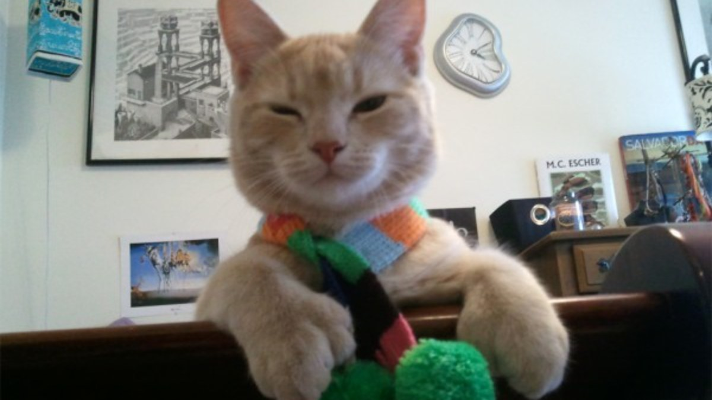

Chó thở gấp sau khi đi Spa: khi nào bình thường, khi nào cần lo?
Trả lời nhanh: chó có thể thở hổn hển tạm thời sau Spa vì nóng, phấn khích hoặc stress do thao tác và môi trường lạ. Đưa bé về nơi mát, yên tĩnh, cho nghỉ và quan sát xem nhịp thở có giảm dần hay không. Tuy nhiên, nếu bé thở gắng sức hoặc nông, nướu/lưỡi xanh hay trắng, yếu, loạng choạng, ngất, nôn, tiêu chảy, chảy dãi nhiều hoặc vẫn thở bất thường khi đã nghỉ ở nơi mát, cần liên hệ bác sĩ thú y ngay. Không nên mặc định mọi trường hợp thở gấp đều do Spa.

Thở hổn hển và khó thở không phải một chuyện
Chó dùng thở hổn hển như một cơ chế điều hòa nhiệt. Bé cũng có thể panting khi phấn khích hoặc căng thẳng. Vì vậy, việc há miệng thở nhanh ngay sau một buổi có nhiều kích thích chưa đủ để kết luận có bệnh.
Điều quan trọng hơn là bối cảnh và xu hướng. Một bé vừa ra khỏi buổi grooming, tỉnh táo, đi đứng bình thường và giảm thở nhanh khi nằm nghỉ ở nơi mát khác với bé phải rướn cổ, dùng nhiều lực ở bụng/ngực để thở, không nằm yên được hoặc ngày càng yếu.
Vì sao chó có thể thở gấp sau khi đi Spa?
1. Nóng sau sấy hoặc di chuyển
Chó giải nhiệt chủ yếu qua hô hấp, nên panting có thể tăng khi cơ thể nóng. Sau Spa, hãy tính cả nhiệt từ quá trình làm khô, thời tiết bên ngoài và quãng đường di chuyển. Chó mặt ngắn, chó lông dày, chó béo phì hoặc có bệnh nền có thể chịu nóng kém hơn.
2. Stress hoặc phấn khích
Môi trường mới, tiếng máy sấy, việc giữ chân, chải lông hoặc cắt móng có thể làm một số bé căng thẳng. Panting là một trong các dấu hiệu stress có thể gặp ở chó. Nếu bé vốn sợ thao tác grooming, xem thêm chó sợ máy sấy khi grooming và chó sợ cắt móng.
3. Vừa vận động hoặc quá kích thích
Đi bộ, chạy nhảy, lên xuống xe hoặc vui mừng khi gặp lại chủ cũng có thể làm nhịp thở tăng. Trong trường hợp này, nhịp thở nên có xu hướng dịu xuống khi bé ngừng hoạt động và nghỉ ở nơi thoáng mát.
4. Đau hoặc khó chịu
Đau cũng có thể làm chó bồn chồn và thở nhanh. Nếu thở gấp đi cùng khập khiễng, kêu đau, né chạm vào một vùng, bụng căng hoặc hành vi khác hẳn bình thường, cần nhìn rộng hơn thay vì chỉ quy cho stress.
5. Vấn đề hô hấp, tim mạch hoặc bệnh lý khác
Thở nhanh bất thường có nhiều nguyên nhân không liên quan tới grooming. Nếu triệu chứng xuất hiện khi bé đang nghỉ, tái diễn nhiều lần hoặc đi kèm ho, yếu, ngất hay niêm mạc đổi màu, bác sĩ thú y mới là người phù hợp để xác định nguyên nhân.
5 bước nên làm ngay khi chó thở gấp sau Spa
Bước 1: Dừng vận động và đưa bé tới nơi mát
Cho bé nghỉ ở nơi yên, thoáng, tránh nắng và tránh tiếp tục chạy nhảy. Không quấn khăn dày quanh cơ thể nếu bé đang nóng.
Bước 2: Quan sát nướu, lưỡi và cách lồng ngực di chuyển
Nhìn màu nướu/lưỡi và xem bé có phải dùng nhiều lực để hít thở không. Nướu hoặc lưỡi xanh/trắng, thở gắng sức hoặc nông là dấu hiệu cần xử lý khẩn.
Bước 3: Cho tiếp cận nước nhưng không ép uống
Đặt nước sạch cạnh bé. Nếu nghi quá nóng, không cố đổ nước vào miệng một con chó đang thở khó vì có thể làm tình hình nguy hiểm hơn.
Bước 4: Ghi lại video
Một video 20–30 giây khi bé đang đứng và khi nằm nghỉ có thể giúp bác sĩ thú y đánh giá kiểu thở tốt hơn lời mô tả “thở nhanh”. Ghi thêm thời điểm bắt đầu, buổi Spa vừa làm những bước nào và triệu chứng có giảm khi nghỉ hay không.
Bước 5: Không tự dùng thuốc an thần hoặc thuốc của người
Đừng tự cho thuốc để “bé bình tĩnh lại”. Nếu panting liên quan bệnh hô hấp, tim mạch, đau hoặc quá nóng, việc tự dùng thuốc có thể che dấu triệu chứng hoặc gây thêm rủi ro.
Khi nào cần đưa chó đi thú y ngay?
Cần ưu tiên đánh giá thú y khẩn cấp khi có khó thở hoặc thở nông/gắng sức, nướu hay lưỡi xanh hoặc trắng, yếu rõ, loạng choạng, ngất, mất phối hợp, nôn/tiêu chảy kèm nóng và thở hổn hển quá mức, hoặc tình trạng xấu đi nhanh. Đây không phải nhóm triệu chứng nên chờ tới hôm sau chỉ vì chúng xuất hiện sau Spa.
Nếu bé là giống mặt ngắn như French Bulldog/Pug, có bệnh tim-phổi đã biết, lớn tuổi hoặc từng có vấn đề chịu nóng, ngưỡng liên hệ bác sĩ thú y nên thấp hơn. Với các bé lớn tuổi trước buổi grooming, xem thêm chó lớn tuổi đi Spa cần lưu ý gì.
Lần Spa sau nên chuẩn bị gì?
Hãy báo trước nếu bé từng thở hổn hển mạnh, sợ máy sấy, có bệnh tim-phổi, là giống mặt ngắn hoặc chịu nóng kém. Mục tiêu là giúp người chăm sóc biết lịch sử của bé và điều chỉnh thao tác phù hợp trong phạm vi dịch vụ grooming.
Nếu bé đã được bác sĩ thú y đánh giá ổn và cần chăm sóc lông, bạn có thể xem Spa thú cưng Bình Thạnh, dịch vụ Grooming hoặc đặt lịch Lumi Pet. Khi đặt lịch, mô tả rõ giống, cân nặng, tuổi, bệnh nền và phản ứng ở lần grooming trước.
Cần đặt lịch Spa/Grooming?
Gửi trước thông tin của bé để Lumi Pet tư vấn dịch vụ phù hợp. Nếu bé đang có dấu hiệu khó thở hoặc bất thường về sức khỏe, hãy ưu tiên bác sĩ thú y trước khi grooming.
Câu hỏi thường gặp
Chó thở gấp sau Spa bao lâu thì hết?
Không nên đặt một mốc phút cố định cho mọi chó. Hãy quan sát xu hướng: phản ứng do nóng, kích thích hoặc stress phải dịu đi khi nguyên nhân được loại bỏ và bé nghỉ. Nếu không giảm hoặc xuất hiện dấu hiệu cảnh báo, liên hệ bác sĩ thú y.
Có nên cho chó nằm máy lạnh?
Một không gian mát, thông thoáng có thể giúp bé dễ chịu nếu đang nóng. Tránh thay đổi nhiệt độ cực đoan và vẫn phải theo dõi cách thở, mức tỉnh táo và màu niêm mạc.
Spa có phải nguyên nhân làm chó thở gấp?
Không thể kết luận chỉ dựa vào thời điểm. Grooming có thể tạo nhiệt, vận động hoặc stress, nhưng thở nhanh cũng có thể liên quan nhiều vấn đề sức khỏe khác. Nếu triệu chứng đáng lo, cần chẩn đoán thú y.
Bài liên quan
Chó mệt sau khi đi Spa · Chó khát nước sau khi đi Spa · Chó tiêu chảy sau khi đi Spa · Chó bị ngứa sau khi tắm